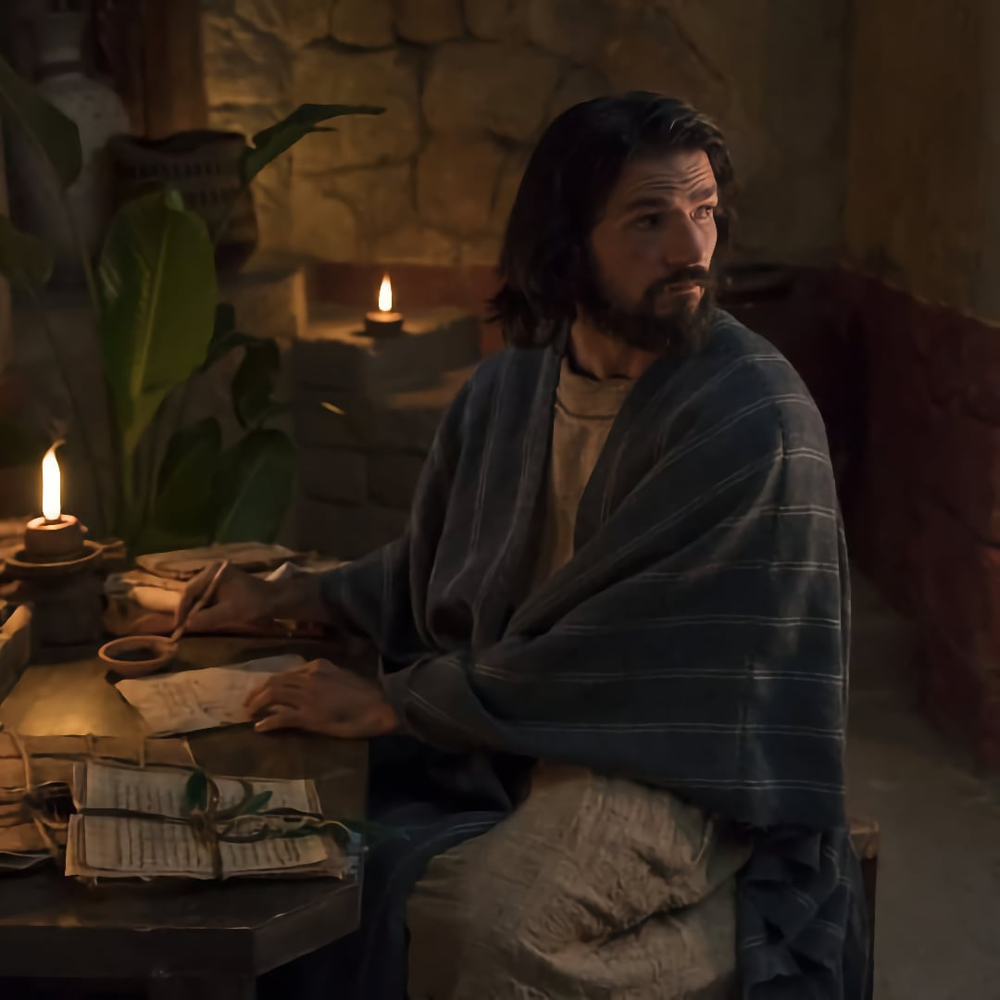
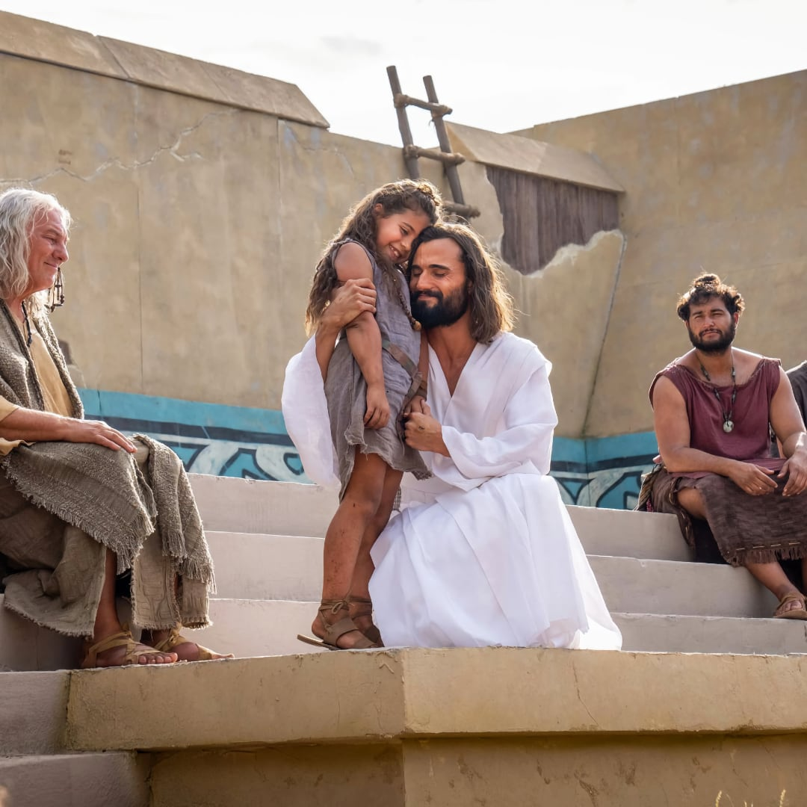

The Book of Mormon and Temples
While temple ordinances are not explicitly mentioned in the Book of Mormon, we do know that the Nephites and Lamanites built temples and worshipped in them. Below you will find examples of temple doctrine taught in the Book of Mormon
2 Nephi 2
In 2 Nephi 2, Lehi uses the story of the Creation and of Adam and Eve to teach Jacob about agency, opposition, the nature of God, and our redemption through Jesus Christ. These principles are strikingly similar to those taught in the House of the Lord today, and emphasize this teaching of Joseph Smith: “What was the object of gathering the Jews, or the people of God in any age of the world? … “The main object was to build unto the Lord a house whereby He could reveal unto His people the ordinances of His house and the glories of His kingdom, and teach the people the way of salvation; for there are certain ordinances and principles that, when they are taught and practiced, must be done in a place or house built for that purpose”
Alma 42
Elder John A, Widtsoe taught that, “The temple is a place where ceremonies pertaining to Godliness are presented. The great mysteries of life, with man’s unanswered questions, are here made clear: (1) Where did I come from? (2) Why am I here? (3) Where do I go when life is over? Here the needs of the spirit from which all other things of life issue are held of paramount importance.” In Alma 39-42, Alma taught his son Corianton those same principles to help Corianton understand the need for repentance. Interestingly, Alma used the same story of the fall of Adam and Eve to teach why a Redeemer was necessary and how we can be saved. From this we learn that one purpose of the temple is to teach us why we need to repent, and how we can obtain forgiveness.
3 Nephi
When Christ visited the Nephites, He first came to His house in the city of Bountiful. While He was there, He taught a sermon similar to the sermon on the mount, which included the Beatitudes. Elder Robert E. Wells shared this about being “pure in heart”: “In Spanish, the term “pure in heart” is translated “clean of heart” (limpios). That is closer to the original Greek text. It means no stains, no dirt, no marks. It is a physical interpretation, as if talking of clean clothing just laundered. It could also refer to clean water, with no contamination. It is used with regard to ceremonial cleanliness after baptism or after leaving the temple.”
In addition, Dr. Sidney B, Sperry shared, “Before the resurrection of our Lord, ordinance work for the dead could not be carried out either in the temples in Palestine or on this continent. But after his resurrection, he fully explained such work to the Nephites. This is shown by the fact that he quoted in full chapters 3 and 4 of Malachi and “expounded them unto the multitude.” (3 Ne. 24:1; 3 Ne. 26:1.) Thus, the sealing powers of Elijah as applied to ordinance work for the dead became known to the Nephites. We may presume that such work was carried out in their temples during the period of their righteousness, for four generations.”